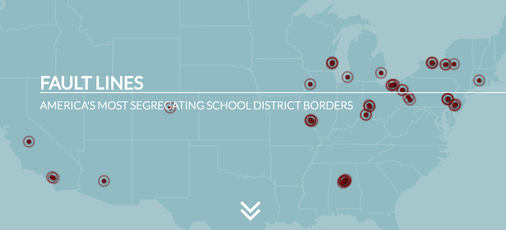

As a first-year masters student at MIT, I am diving head first into the world of science, technology, statistics, and computing this semester. While I consider myself more of a qualitative person, part of my goal for graduate school is to immerse myself in cutting edge tools and technologies that can supplement my critical analysis skills to better understand how and why cities in the Global South develop. I am convinced (but optimistically so) that it will be a bumpy ride, but I wouldn't have it any other way! Below, you can find a data visualization project that I find inspiring. Click here to learn more about the project and experience the clarity with which data, graphics, and visualization techniques to effectively tell a story about disparity in funding between adjacent school zone districts around the country. 